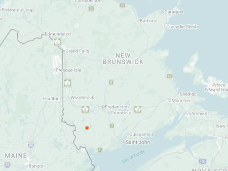

photo: None yet. Find one, let us know!

Distribution map (based on iNaturalist observations)
Identification
- Medium-sized (12–16 mm), metallic green to purple with bold white maculations on elytra.
- Reddish abdomen visible in flight; fast runner on open ground.
- Active early in season; often on dirt paths or roadsides.
Habitat in New Brunswick
Prefers open, sunny dirt paths, roadsides, and disturbed sandy or clay soils. Regional patterns suggest early-season specialist, but NB habitat use is poorly documented.
Flight Season in NB
July 16 (single record); likely active earlier in spring (April–June) based on regional patterns.
Distribution & Notes
Known in New Brunswick from a single confirmed record on July 16, 2020 (Reggie Webster). No other sightings have been confirmed despite searches. Likely more widespread in southern NB based on patterns in adjacent regions (Maine, Quebec), but current evidence is limited to this one observation. High priority for future surveys.